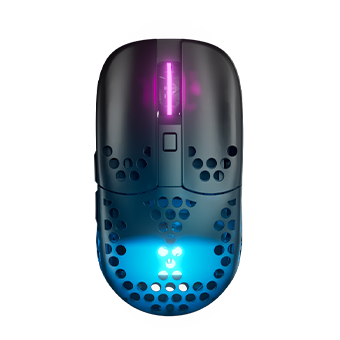
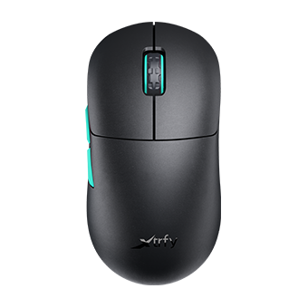
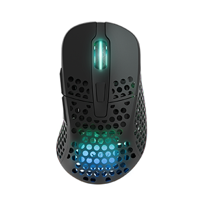
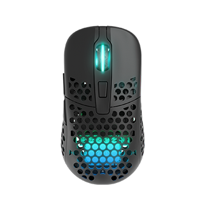

Товари Xtrfy:
-

Mz1
- Дротовий - стандартний кабель
- Оптичний датчик
- Є можливість використання без провода
- Максимальна чутливість(DPI) 26 000
- Вага 0.061 кг
- Довжина кабелю 1.8м
- Кількість кнопок миші 6
-

M8
- Дротовий - стандартний кабель
- Оптичний датчик
- Є можливість використання без провода
- Максимальна чутливість(DPI) 26 000
- Вага 0.055 кг
- Довжина кабелю 2.2м
- Кількість кнопок миші 5
-

M4
- Дротовий - стандартний кабель
- Оптичний датчик
- Є можливість використання без провода
- Максимальна чутливість(DPI) 19 000
- Вага 0.070 кг
- Довжина кабелю 2.0м
- Кількість кнопок миші 6
-

M42
- Дротовий - стандартний кабель
- Оптичний датчик
- Є можливість використання без провода
- Максимальна чутливість(DPI) 19 000
- Вага 0.067 кг
- Довжина кабелю 2.0м
- Кількість кнопок миші 6
Інформація
Порівняння
InnerHTML
OuterHTML
Зміна кольору
nodeValue
Додати елемент
Видалити елементи
X